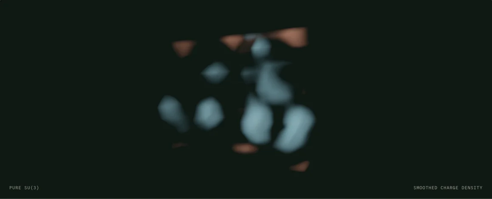

Scientific visualizer / comparison prototype
QCD Lava Lamp
A slice through a small, four-dimensional gauge field.

Lattice and seed take effect on Restart. Beta is 6.0; lengths are in lattice units.
Measurements are preparing.
The warm and blue regions mark opposite signs of topological charge density. The browser samples a pure SU(3) gauge field, copies a snapshot, then smooths that copy to reveal its structure. The view scans one Euclidean coordinate while the sampler advances separately. Neither motion is physical time, and the colors encode sign.
This small periodic box has no calibrated physical scale. Wilson cooling can shrink away structures; the charge estimate need not settle on an integer. Instruments show the raw four-dimensional integral and its change with smoothing. Quarks are absent.
Sources and implementation
- Biddle, Kamleh and Leinweber, Publicising Lattice Field Theory through Visualisation. The reference uses a larger box and improved cooling.
- Leinweber and Puckridge, Structure of the QCD Vacuum. Visual reference.
- Johnson, General heatbath algorithm for pure lattice gauge theory, section III B. SU(2) heatbath measure and Creutz rejection.
- Lüscher, Computational Strategies in Lattice QCD. Subgroup sampling.
- Salmon and collaborators, Parallel Random Numbers: As Easy as 1, 2, 3. Counter-based sampling.
- Numerical conventions, test results, performance and room-host example.